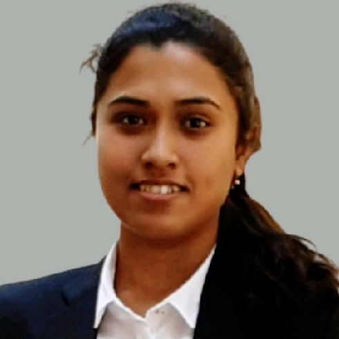

Prospective PhD Scholar |
 |
Carrer del Maresme 151 |


Jenifar Das
Education
2018 - 2020 : MTech in Biochemical Engineering at IIT Varanasi, Uttar Pradesh, India
2013 - 2017 : BTech in Bio Engineering at NIT Agartala, Tripura, India
Achievements
2018 - 2020 : GATE Fellowship for MTech by Ministry of Education, Government of India
2017 : Rising Star Award from Intelenet Global Services (now Teleperformance), Chennai, Tamil Nadu, India
2017 : Basic Medical Coding Certificate from Intelenet Training Academy, Chennai, Tamil Nadu, India
2013 – 2017 : SC Merit Scholarship for BTech by Ministry of Social Justice and Empowerment, Government of India
2012 : Certification on Computer Application from The Computer Point, New Delhi, India
2009 - 2010 : Best Cadet, North Eastern Region in National Cadet Corps (NCC) by Ministry of Defence, Government of India
2009 : Certificate - A in National Cadet Corps (NCC) by Ministry of Defence, Government of India
Teaching Assistance
IIT Varanasi : Genetic Engineering - Fall 2019
IIT Varanasi : Biochemical Engineering Lab - Spring 2019, Fall 2018
Conferences and Workshops
Indo-US Conference on Bioengineering and Regenerative Medicine
Poster Presenter
IIT Varanasi, Uttar Pradesh, India, February 2020
GIAN Course on Nanomedicine: Applications, Challenges and Perspectives
Attendee
NIT Agartala, Tripura, India, March – April 2016
National Seminar on Recent Trends in Research, Development and Innovations in Chemical Industries
Attendee
NIT Agartala, Tripura, India, September 2014
Outside of Work
I am trained in Bharatanatyam form of the Indian classical dance. I also enjoy playing the guitar and reading political philosophy.